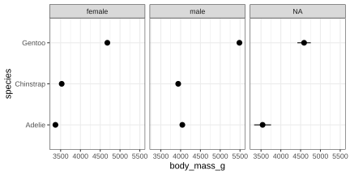
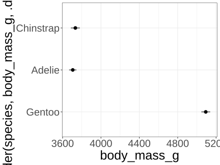
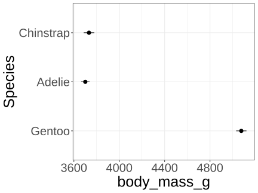
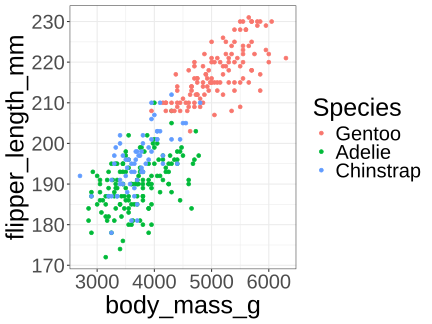
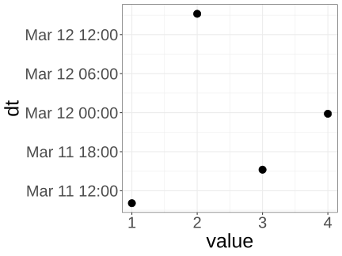
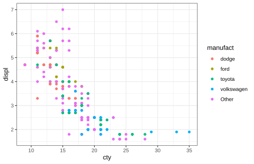
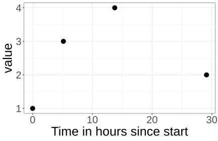

[1] "a crazy sentence with too many spaces in strange places."2024-03-26
Tools to help you work with data that are not numbers
Specialized functions for working with strings, factors and dates
Strings package stringr, glue, unglue and functions str_squish, glue and more
Factors package forcats and functions fct_*
Date and time package: lubridate and functions ymd, ymdhms, yday, decimal_date and more
Extra spaces
Upper and lower case differences
Locales (non-English text); see ragg for plotting with non-Latin text
Difference between factors and strings
Data entered by a human in a web form or spreadsheet often has inconspicuous spaces, for example after the last letter, or two spaces between a word. This is easily ignored when read by humans, but creates havoc for computers. str_squish gets rid of these troublesome spaces.
Upper and lower case differences are often not noticed by humans, but matter to a computer. One solution is to convert all text to upper, lower, or title case.
Plot order on scales (axes, color scale)
Too many factors
Mapping colours to specific levels (later lesson on colour)
Here’s a plot of mean penguin body mass by specie and sex. What’s the order?

Order from smallest to largest, top to bottom. Watch out for NAs.



Date format
Extracting components of date or time
Formatting axes on plots
Arithmetic with dates and times
Time zones
tibble(date = c("01/02/03", "121006", "05/12/08", "11-03-21"),
ymd = ymd(date),
dmy = dmy(date),
mdy = mdy(date)) |> kable()| date | ymd | dmy | mdy |
|---|---|---|---|
| 01/02/03 | 2001-02-03 | 2003-02-01 | 2003-01-02 |
| 121006 | 2012-10-06 | 2006-10-12 | 2006-12-10 |
| 05/12/08 | 2005-12-08 | 2008-12-05 | 2008-05-12 |
| 11-03-21 | 2011-03-21 | 2021-03-11 | 2021-11-03 |


tibble(date = c("2024/02/29", "2021/01/01",
"2021/06/21", "2023/09/01",
"1900/02/29"),
dt = ymd(date),
yday(dt),
decimal_date(dt)) |> kable()| date | dt | yday(dt) | decimal_date(dt) |
|---|---|---|---|
| 2024/02/29 | 2024-02-29 | 60 | 2024.161 |
| 2021/01/01 | 2021-01-01 | 1 | 2021.000 |
| 2021/06/21 | 2021-06-21 | 172 | 2021.468 |
| 2023/09/01 | 2023-09-01 | 244 | 2023.666 |
| 1900/02/29 | NA | NA | NA |
[1] "2024-01-31" "2024-03-01" "2024-03-31" "2024-04-30" "2024-05-30"
[6] "2024-06-29" "2024-07-29" "2024-08-28" "2024-09-27" "2024-10-27"
[11] "2024-11-26" "2024-12-26" [1] "2024-01-31 00:00:00 UTC" "2024-03-01 10:30:00 UTC"
[3] "2024-03-31 21:00:00 UTC" "2024-05-01 07:30:00 UTC"
[5] "2024-05-31 18:00:00 UTC" "2024-07-01 04:30:00 UTC"
[7] "2024-07-31 15:00:00 UTC" "2024-08-31 01:30:00 UTC"
[9] "2024-09-30 12:00:00 UTC" "2024-10-30 22:30:00 UTC"
[11] "2024-11-30 09:00:00 UTC" "2024-12-30 19:30:00 UTC"tibble(date = c("2021/06/21", "2024/02/29", "2024/01/01", "2023/09/01", "2027/03/01"),
dt = ymd(date),
next_year = dt + duration(1, units = "year"),
rounded = round(next_year, unit = "day")) |> select(-date) |> kable()| dt | next_year | rounded |
|---|---|---|
| 2021-06-21 | 2022-06-21 06:00:00 | 2022-06-21 |
| 2024-02-29 | 2025-02-28 06:00:00 | 2025-02-28 |
| 2024-01-01 | 2024-12-31 06:00:00 | 2024-12-31 |
| 2023-09-01 | 2024-08-31 06:00:00 | 2024-08-31 |
| 2027-03-01 | 2028-02-29 06:00:00 | 2028-02-29 |
[1] "31557600s (~1 years)"[1] 31557600[1] "2100-03-01"[1] NA[1] "1900-02-28"[1] "2200-03-02"[1] "2300-03-03"[1] "2400-03-03"tibble(date = c("2021/03/11 10:05", "2021/03/12 15:12",
"2021/03/11 15:14", "2021/03/11 11:50 PM"),
dt = ymd_hm(date),
value = 1:4) |>
mutate(elapsed = dt - min(dt)) |> kable()| date | dt | value | elapsed |
|---|---|---|---|
| 2021/03/11 10:05 | 2021-03-11 10:05:00 | 1 | 0 secs |
| 2021/03/12 15:12 | 2021-03-12 15:12:00 | 2 | 104820 secs |
| 2021/03/11 15:14 | 2021-03-11 15:14:00 | 3 | 18540 secs |
| 2021/03/11 11:50 PM | 2021-03-11 23:50:00 | 4 | 49500 secs |

[1] "2026-01-06 11:40:14 AST"[1] "2026-01-06T11:40:14-0400"[1] "January 06, 2026 at 11:40 AM"[1] "2026-01-06 11:40:14 AST"[1] "2024-03-27T10:05:05+0000"[1] "March 27, 2024 at 10:05 AM"[1] "2024-03-27 07:05:05 ADT"Course notes
Healy appendix
R4DS Chapter 14 Strings, Chapter 16 Factors, and Chapter 17 Dates and times